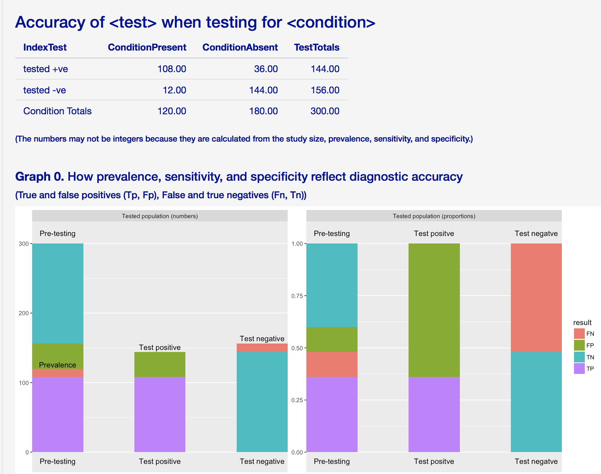
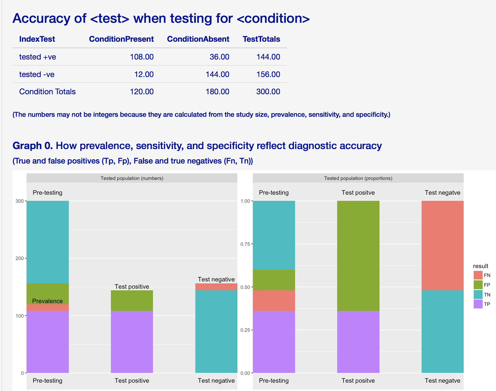

Figure.
Screensnip
of the diagnostic accuracy table and graph 0. The figure below is a screen snip showing how the table and graph
0 look when the app is first started, with no customisation of the
labels or accuracy data.
|

Figure.
Screensnip
of the diagnostic accuracy table and graph 0. |
The table compares the results of the test with the condition
being tested for.
The table shows the numbers of true and false postives (TP, FP)
and the numbers of fales and true negatives (FN, TN)
Click on the tab to "Explore clinical accuracy and utility of
diagnostic tests".

Use the form on the left to:
Change the labels
for population, test, and condition
(and click on the update button --- it is slow, so please be
patient; we are working on improving the response time)
Do the table and graphs show the names of the population,
test, and condition you are interested in?
Change the prevalence
(and click on the update button)
How do the TP, FP, FN, TN change on the table and charts?
(Don't worry about graphs 1 and 2 just yet!)
Change the specificity (and
click on the update button)
How do the TP, FP, FN, TN change on the table and charts?
Why? (Hint: specificity = (number of true negatives / number
without the condition))
Use the form on the left to explore the clinical accuracy and
clinical utility of d-dimer as a test for excluding VTE (venous
thromboembolism).
The data are from a systematic review and meta-analysis by GJ
Geering et al (see
abstract and link to full paper).
Change the labels:
Population to pregnant women
Condition to VTE
Test to d-dimer
Explore the range of
prevalences in different populations
Prevalence from 4% to 51%
Explore the range of
specificities
Specificity from 48% to 74% (95% confiden ce intervals from
33% to 78%